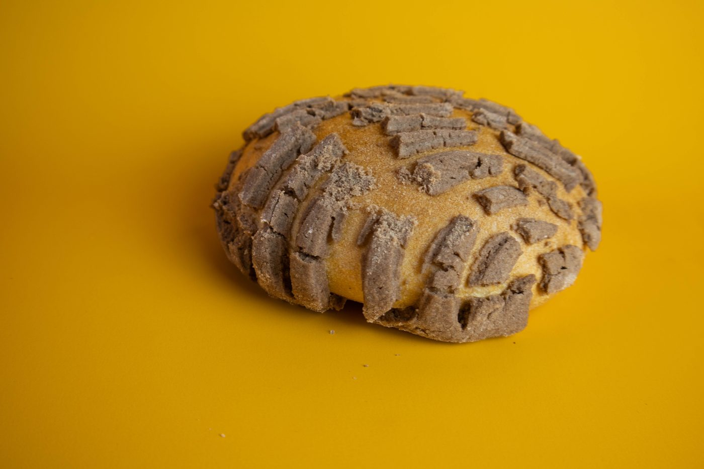
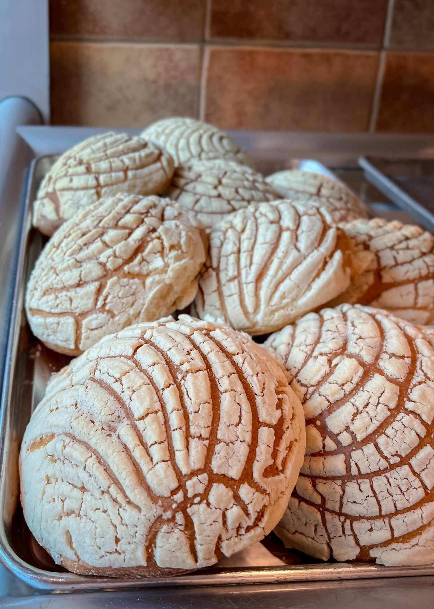

A Mexican bakery in Albuquerque
Mexican bakery classics on Broadway
El Dorado Bakery serves pan dulce, bolillo, menudo, pan de muerto, donuts, cakes, and pozole, with breakfast and lunch, takeout and dine-in.
A Mexican bakery in Albuquerque
El Dorado Bakery serves pan dulce, bolillo, menudo, pan de muerto, donuts, cakes, and pozole, with breakfast and lunch, takeout and dine-in.
El Dorado Bakery sits at 2125 Broadway Blvd SE in Albuquerque. The bakery serves pan dulce, bolillo, menudo, pan de muerto, donuts, cakes, and pozole, with breakfast and lunch, takeout and dine-in.


2125 Broadway Blvd SE, Albuquerque, NM 87102
Daily, 6:30 AM to 3:00 PM